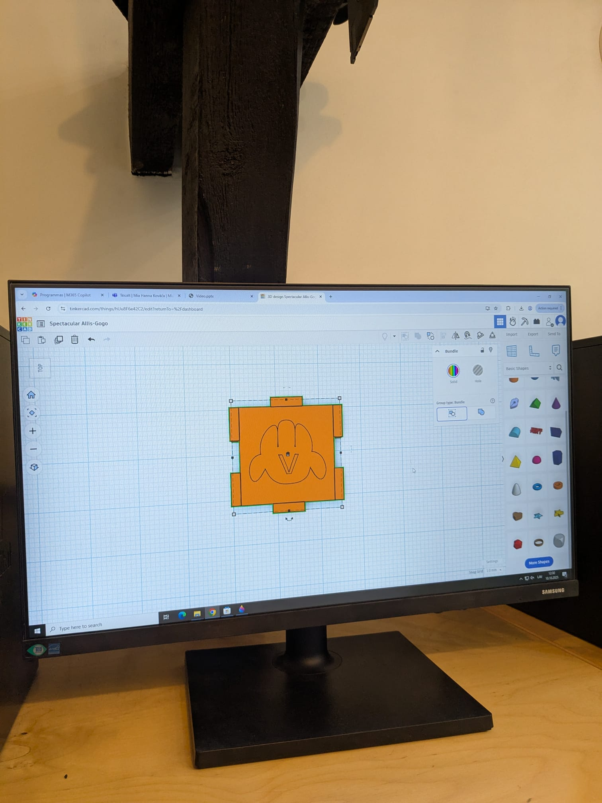
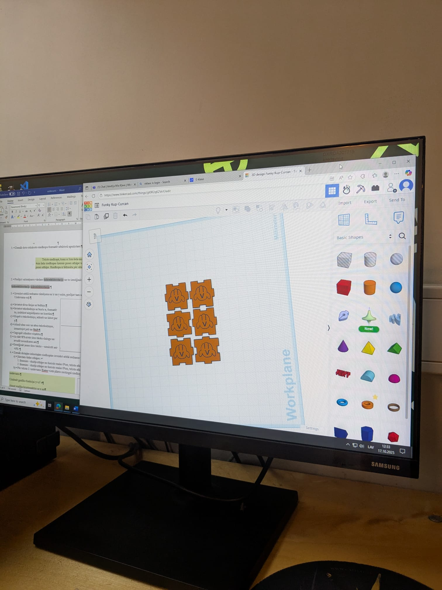

Datorikas portfolio
Par projektu
Datorikas projekts
Tā kā šobrīd datorikā apgūstam tēmu par tīmekļa lapām un to veidošanu, kā mūsu gala projektu mums ir jāizveido tīmekļa lapa. Tai ir jābūt porfolio ar visām mums pagaidām apgūtajām tēmām. Lejā var apskatīt visas šīs tēmā ar piemēriem, kā arī ar nelielu aprakstu.
Rakstragrafika
GIMP
Pirmā tēma, ko apguvām, bija rakstragrafika, kurā mācījāmies lietot programmu "GIMP". Izveidojām daudz dažādu bilžu - rediģējām, lai būtu daudz zemeņu, apslēpām atkritumus parka foto attēlā un pat izveidojām kurstīgas bildes un banerus.
Vektorgrafika
Inkscape un Tinkercad
Nākamā tēma bija vektorgrafika, kur mēs izmantojām programmu "Inkscape" un "Tinkercad". Programmā "Inkscape" mēs izveidojām plakātu par mūsu individuālu tēmu, kā arī izveidojām kompānijas logo. Vēlāk logo pārlikām programmā "Tinkercad", kur izveidojām 3D modeli ar kuba puzzli ar klasesbiedra izveidotu logo.



Video apstrāde
Clipchamp
Kamēr veidojām "Tinkercad" kuba projektu, procesu dokumentējām. No nofilmētajiem video bija jāizveido videoklips, aprakstot 3D projekta plānošanu, drukāšanu un salikšanu. Tā kā projekts bija jāveido grupās, varējām katrs iepazīties un sadarboties vairāk.
Tekstapstrāde
Word
Tālāk mēs mācījāmies programmu "Word". Lai gan biju šo programmu izmantojusi daudzreizēji iepriekš, apgūstot to padziļināti, iemācījos daudz jauna, piemēram, pasta sludināšanu, atsauču ievietošanu, navigāciju, footnote lietošanu un vēl, kā arī bija jāizveido dokuments par individuālo tēmu atbilstoši ZPD noformatēšanas noteikumiem, kas noteikti būs ļoti noderīgi nākamgad.
Izklājlapas
Excel
Pagaidām pēdējā tēma, ko esam apguvuši, ir programma "Excel". Šeit mācījāmies rīkoties un apstrādāt datus izklājlapās - gan mazas un vienkāršas, gan lielākas un sarežģītākas. Vēl veidojām dažāda veida grafikus un veicām aprēķinus. Šis bija ļoti noderīgi, jo fizikas laboratorijas darba veikšanai izmantojam excel tabulas un grafikus datus apstrādei.
Aprēķini Excel